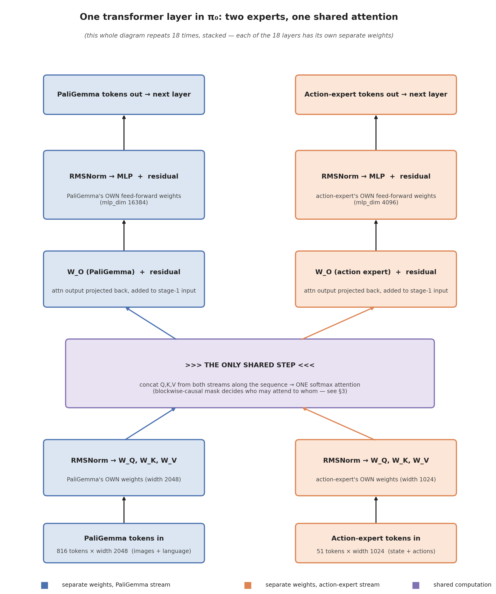
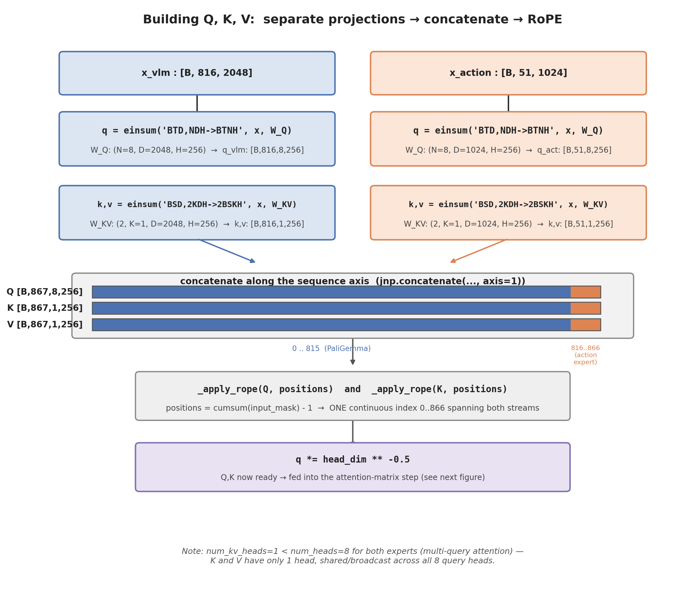
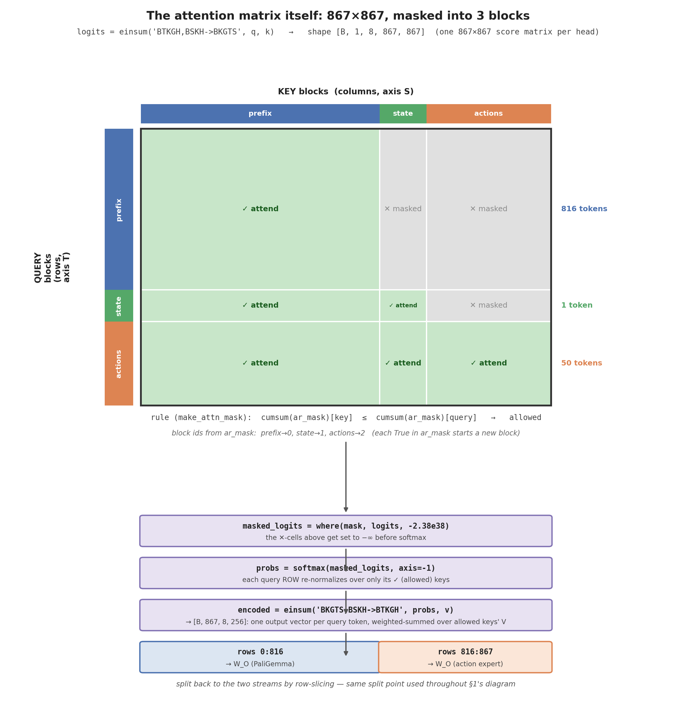
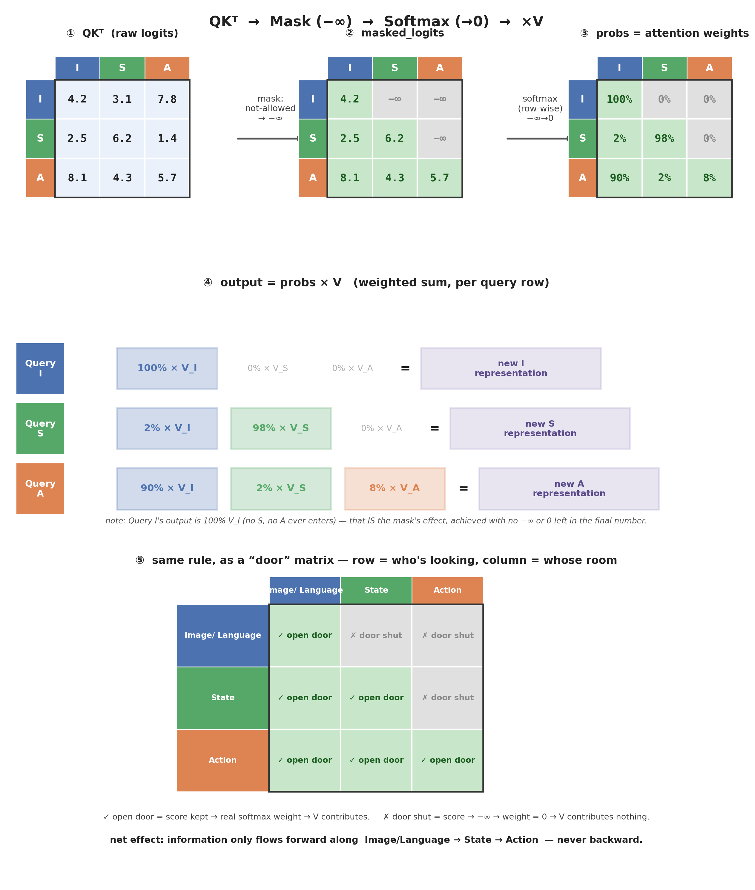
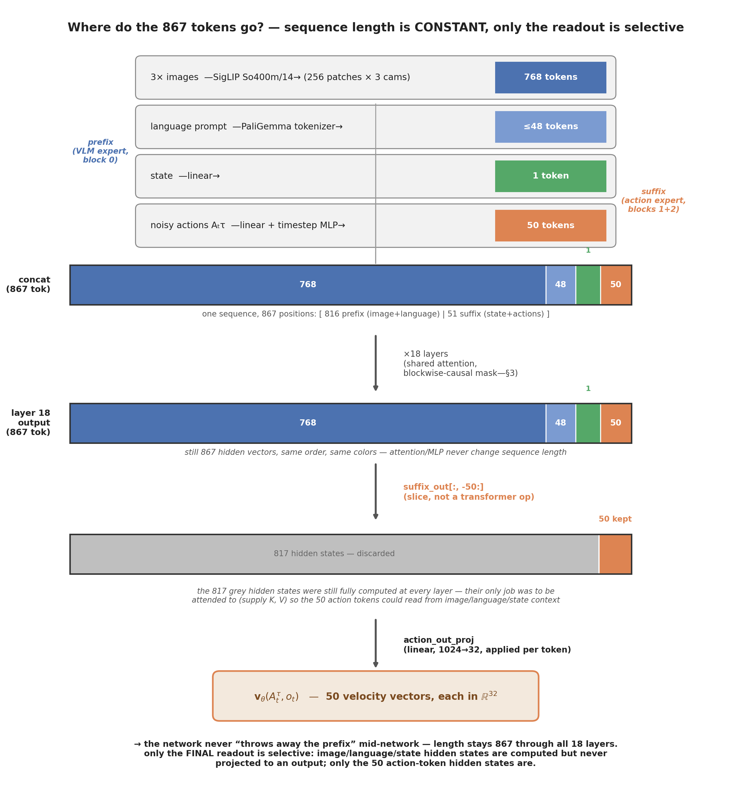

π₀: A Vision-Language-Action Flow Model for General Robot Control¶
Citation¶
- Title: π₀: A Vision-Language-Action Flow Model for General Robot Control
- Authors / venue / year: Physical Intelligence (Kevin Black, Noah Brown, Danny Driess, Chelsea Finn, Sergey Levine, Karl Pertsch, et al.) — arXiv, 2024.
- Links: paper · project · openpi (code)
- Related notes: Flow Matching · Diffusion Policy
- Reading status: deep read (architecture + training/inference code verified against
openpisource)
One-sentence claim¶
A single generalist policy — a pretrained VLM (PaliGemma) fused at the attention level with a small flow-matching "action expert" — can be trained across many robots, embodiments, and tasks, and produce dexterous, high-frequency action chunks at deployment.
Problem and assumptions¶
- Input at deployment: up to 3 RGB camera views, a language instruction, and a low-dimensional proprioceptive state vector.
- Output: an action chunk of \(H=50\) future actions, each in a padded 32-dim action space shared across all embodiments.
- Training data/supervision: large heterogeneous multi-robot, multi-task demonstration dataset; supervised via flow-matching regression (no reward, no online interaction in the base π₀ recipe).
- What changes at test time? the language instruction and camera feed; the VLM backbone weights are the same pretrained-then-fine-tuned weights as training, no test-time adaptation.
- What is held out in evaluation? task/scene combinations not seen during training (generalization is evaluated, not just held-out demonstrations of trained tasks).
Method¶
0. Where this sits relative to what I already know¶
π₀ reuses two things wholesale and swaps out a third:
- Reused: the "condition on an observation, denoise an action chunk" structure from Diffusion Policy, and the flow-matching training/sampling machinery from Flow Matching.
- New: the observation encoder is a full pretrained vision-language model (PaliGemma: SigLIP + Gemma 2B) instead of a small CNN/ViT, and it is trained across many robots/embodiments rather than one robot/one task.
1. Architecture: one transformer, two "experts," sharing only attention¶
Transformer primer, in one paragraph (skip if familiar): a transformer processes a sequence of tokens (vectors) through a stack of identical layers. Each layer has two sub-steps applied to every token: (1) attention — each token looks at every other token in the sequence and pulls in a weighted mix of their content (weights come from a softmax over "how relevant is token \(j\) to token \(i\)," computed from learned query/key/value projections \(W_Q,W_K,W_V\)); (2) a feed-forward MLP applied independently to each token afterward. Both sub-steps are wrapped in a residual connection (\(x\to x+\text{sublayer}(x)\)) and a normalization step (RMSNorm here) before each sub-step. π₀'s only twist is that it runs two different token streams with two different sets of these weights, merged solely at the attention step.
implemented as one 18-layer transformer where every layer runs two separate weight sets (gemma.py's Config), and the two streams interact only through a shared self-attention operation — never through a shared MLP, never through weight sharing outside attention:
# pi0.py — Pi0.__init__
paligemma_config = _gemma.get_config(config.paligemma_variant) # "gemma_2b"
action_expert_config = _gemma.get_config(config.action_expert_variant) # "gemma_300m"
llm = nnx_bridge.ToNNX(_gemma.Module(configs=[paligemma_config, action_expert_config], ...))
| Expert | width | depth | mlp_dim | heads / kv-heads | params |
|---|---|---|---|---|---|
gemma_2b (VLM) |
2048 | 18 | 16384 | 8 / 1 | ~2B |
gemma_300m (action expert) |
1024 | 18 | 4096 | 8 / 1 | ~300M |
Concretely, one layer looks like this — trace the two colored columns down from "tokens in" to "tokens out," and notice they only ever touch each other inside the single purple box:

Reading the diagram stage by stage:
- Tokens in — two separate sequences: 816 PaliGemma tokens (width 2048) and 51 action-expert tokens (width 1024). Different lengths, different widths — they are not the same kind of vector at all yet.
- Separate \(W_Q,W_K,W_V\) — each stream projects its own tokens into queries/keys/values using its own weight matrices. Nothing shared yet.
- The purple box — the only shared step — this is the crux of "sharing only attention": the two streams' Q/K/V are concatenated into one long sequence (816+51 = 867 positions), and one softmax-attention computation runs over all of them together. This is what lets an action token "look at" an image token's content (and vice versa, subject to the mask in §3) — information crosses between the VLM and the action expert only at this step, and only in the direction the blockwise-causal mask allows.
- Split back out — the attention output is sliced back into the two original streams (first 816 rows → PaliGemma, last 51 rows → action expert).
- Separate \(W_O\) + residual, separate MLP + residual — from here on the two streams are independent again until the next layer's attention step.
- This entire diagram is one of the 18 stacked layers — each layer has its own independent set of all the weights shown (nothing is reused layer-to-layer).
Precision: "sharing only attention" specifically means this attention computation is the only place a single mathematical operation consumes both streams' tokens at once. It does not mean the two experts share weight values — \(W_Q^{\text{VLM}}\) and \(W_Q^{\text{action}}\) are two completely separate learned matrices (different shapes even: \(2048\times256\) vs \(1024\times256\) per the head_dim); "shared" describes the computation (one joint softmax), not the parameters.
2. Two token streams, built by embed_prefix / embed_suffix¶
Prefix (VLM expert only) — images + language:
# pi0.py — embed_prefix
for name in obs.images:
image_tokens, _ = self.PaliGemma.img(obs.images[name], train=False)
tokens.append(image_tokens); ar_mask += [False] * image_tokens.shape[1]
tokenized_inputs = self.PaliGemma.llm(obs.tokenized_prompt, method="embed")
tokens.append(tokenized_inputs); ar_mask += [False] * tokenized_inputs.shape[1]
Image encoder: SigLIP "So400m/14" (from siglip.py's variant table: width 1152, depth 27, patch size 14×14, pool_type="none" — no CLS pooling, every patch token is kept). With IMAGE_RESOLUTION=(224,224):
π₀ always expects 3 cameras (base_0_rgb, left_wrist_0_rgb, right_wrist_0_rgb):
Each SigLIP patch token is linearly re-projected from width 1152 → 2048 (the VLM width) inside the SigLIP module's own output head (num_classes=paligemma_config.width).
Suffix (action expert only) — state + noisy actions:
# pi0.py — embed_suffix
if not self.pi05:
state_token = self.state_proj(obs.state)[:, None, :] # 1 token
ar_mask += [True] # starts a new block
action_tokens = self.action_in_proj(noisy_actions) # H=50 tokens
ar_mask += [True] + ([False] * (self.action_horizon - 1)) # first action starts a block, rest join it
action_horizon=50 (this is \(T_p\)/\(H\) from the Diffusion Policy note) and action_dim=32 — a padded, unified action vector shared across every embodiment π₀ was trained on, which is the concrete mechanism behind "one policy, many robots."
Precision: in π0.5 (pi05=True), the state is instead folded into the discrete language tokens (part of the prefix), and the suffix contains only the 50 action tokens — one of the two architectural differences called out directly in pi0_config.py's docstring.
Precision: the suffix has 51 tokens (1 state + 50 actions), so the transformer produces 51 output vectors for it — but only the last 50 are ever decoded into \(\mathbf v_\theta\): suffix_out[:, -self.action_horizon:] (used identically in compute_loss and sample_actions). The state token's own transformer output is simply discarded; its only job is to be attended to by later blocks (per §3's mask), not to produce a prediction itself. This matches the paper's line exactly: "we only use the transformer outputs corresponding to the \(H\) noisy actions."
3. Attention mask: a provably-correct 3-block causal structure¶
make_attn_mask builds the mask from a cumulative block-id trick:
mask_ar = jnp.broadcast_to(mask_ar, input_mask.shape)
cumsum = jnp.cumsum(mask_ar, axis=1)
attn_mask = cumsum[:, None, :] <= cumsum[:, :, None] # allowed iff key_block <= query_block
Every True in ar_mask starts a new block (bumps the running count); a query token in block \(q\) may attend to any key token in block \(k\le q\). Tracing the three blocks assembled above:
| Block | Tokens | ar_mask pattern |
block id (cumsum) |
|---|---|---|---|
| 1 — images + language | 768 + ≤48 | all False |
0 |
| 2 — state | 1 | True |
1 |
| 3 — noisy actions | 50 | True, then 49×False |
2 |
Reading off the rule key_block <= query_block:
- Within block 1: every image/language token shares block id 0, so \(0\le0\) both directions → full bidirectional attention among all images and language.
- Within block 3: all 50 action tokens share block id 2 (only the first action token incremented the counter) → \(2\le2\) both directions → full bidirectional attention among all action tokens — this is exactly the "full bidirectional attention mask, so that all action tokens attend to each other" line from the paper.
- Across blocks, one direction only: state (id 1) can see block 1 (\(0\le1\)), but block 1 cannot see state (\(1\le0\) is false); actions (id 2) can see both earlier blocks, but neither earlier block can see actions. This is the "blockwise causal" structure — full attention inside a block, one-directional between blocks — and it is exactly why gradients from the action/state stream can never leak backward into corrupting the pretrained VLM's own input representations.
3b. Inside the purple box: how the tokens are actually concatenated and multiplied¶
Section 1's diagram drew the shared step as one purple box. Here is exactly what happens inside it, straight from Attention.__call__ in gemma.py.
Step 1 — each stream computes its own Q, K, V, then they get concatenated along the sequence axis:
# gemma.py — Attention.__call__
for i, (x, config) in enumerate(zip(xs, self.configs, strict=True)):
...
q = q_einsum("BTD,NDH->BTNH", x) # per-expert weights, per-expert width D
k, v = kv_einsum("BSD,2KDH->2BSKH", x) # num_kv_heads=1 for both experts (multi-query attention)
qkvs.append((q, k, v))
q, k, v = (jnp.concatenate(y, axis=1) for y in zip(*qkvs, strict=True)) # <-- THE concatenation
q = _apply_rope(q, positions=positions) # ONE continuous position index, 0..866, across both streams
k = _apply_rope(k, positions=positions)

The crucial shapes: both experts share head_dim=256 and num_heads=8/num_kv_heads=1 (required — see the asserts at the top of Attention.__call__), so even though the two streams' raw widths differ (2048 vs 1024), their Q/K/V land in the same per-head dimension and can be legally concatenated along the sequence axis into one 867-length sequence. Concatenating along the sequence axis (not the feature axis) is exactly what turns "two separate transformers" into "one transformer, two token streams."
Step 2 — the actual matrix multiplication that computes attention, and where the mask enters:
# gemma.py — Attention.__call__ (continued)
logits = jnp.einsum("BTKGH,BSKH->BKGTS", q, k, ...) # [B,1,8,867,867] — raw scores, mask not yet applied
masked_logits = jnp.where(attn_mask[:, :, None, :, :], logits, big_neg) # the 3-block mask from §3
probs = jax.nn.softmax(masked_logits, axis=-1) # row-normalize over allowed keys only
encoded = jnp.einsum("BKGTS,BSKH->BTKGH", probs, v) # [B,867,8,256] — weighted sum with V
# then split back by row-slicing, one W_O per expert:
out.append(out_einsum("BTNH,NHD->BTD", encoded[:, start:end]))

Reading this diagram together with the code: logits is a full 867×867 matrix of raw scores (every query token scored against every key token, no exceptions yet) — the green/grey grid shows which of those scores survive jnp.where(attn_mask, logits, -2.38e38) before the softmax ever runs. Because softmax normalizes each query's row independently (axis=-1), a masked-out score doesn't just get "ignored" — pushing it to \(\approx-\infty\) makes its post-softmax probability exactly \(0\), so the weighted sum einsum('BKGTS,BSKH->BTKGH', probs, v) for e.g. a prefix-block query literally cannot include any contribution from action-block V's, regardless of what those V's contain.
Precision: everything in this subsection happens inside one attention call, at every one of the 18 layers — there is no point in the network where "the VLM" and "the action expert" are two separate programs; they are two differently-weighted slices of one 867-token sequence being pushed through one shared softmax, 18 times.
A tiny 3×3 walk-through of "then what happens after masking": shrink the 867 tokens down to one representative token per block — I = an image/language token, S = the state token, A = an action token — and follow one number through all four steps: \(QK^\top \to \text{mask} \to \text{softmax} \to \times V\).

Reading it in words, once per stage:
- ① raw logits — every query sees every key; there's no masking yet, just \(QK^\top\) scores.
- ② masked_logits —
jnp.where(mask, logits, big_neg)zeroes out nothing numerically — it overwrites disallowed cells with a huge negative number. Allowed cells (green) keep their real score. - ③ softmax, row by row — since softmax is \(e^{x_i}/\sum_j e^{x_j}\) and \(e^{-\infty}=0\), every grey cell becomes an exact 0 probability, and the remaining green cells in that row renormalize to sum to 100%. This is the entire "mask" — it's not the \(-\infty\) itself, it's what softmax does to it.
- ④ output = probs × V — the new representation of each query token is just a weighted average of the V's it's allowed to see. Query
I's row was[100%, 0%, 0%], so its output is literallyV_I— no trace ofSorAcan appear in it, by construction, not by luck. - ⑤ the same 0/nonzero pattern, redrawn as a "who may open a door into whom" matrix — this is the mental shortcut: ✓ means the score survives long enough to get a nonzero softmax weight, ✗ means it's mathematically guaranteed to become exactly 0. Reading the grid:
Action(bottom row) has all doors open — it can pull fromImage/Language,State, and itself — whileImage/Language(top row) only has a door to itself, so it never even indirectly hears aboutStateorActionat this layer.
The real 867×867 case (above) is exactly this, just with each of I/S/A replaced by an entire block of tokens (image+language / state / noisy-action) and the single number in each cell replaced by a whole block of scores that gets masked/softmaxed together.
4. Timestep conditioning: π₀ vs π0.5¶
The paper gives an exact formula for how each noisy action token's embedding incorporates \(\tau\) (for π₀, not π0.5):
where \(\phi:\mathbb R\to\mathbb R^w\) is a sinusoidal positional encoding, \(W_1\in\mathbb R^{w\times d}\), \(W_2\in\mathbb R^{w\times 2w}\), \(W_3\in\mathbb R^{w\times w}\), \(d=32\) is the action dimension, and \(w=1024\) is the action expert's width. Mapped directly onto variable names in pi0.py:
| Paper symbol | Code | Shape |
|---|---|---|
| \(W_1\) (applied per action) | self.action_in_proj |
\(1024\times32\) |
| \(\phi(\tau)\) | posemb_sincos(timestep, ...) |
\(\mathbb R^{1024}\) |
| \(W_2\) (+ swish) | self.action_time_mlp_in |
\(1024\times2048\) |
| \(W_3\) | self.action_time_mlp_out |
\(1024\times1024\) |
time_emb = posemb_sincos(timestep, ..., min_period=4e-3, max_period=4.0)
if self.pi05:
# AdaRMSNorm conditioning vector — re-injected at every one of the 18 layers
time_emb = swish(self.time_mlp_out(swish(self.time_mlp_in(time_emb))))
adarms_cond = time_emb
else:
# concatenated into each action token once, before layer 1
time_tokens = repeat(time_emb, "b emb -> b s emb", s=self.action_horizon)
action_expert_tokens = MLP(concat([action_tokens, time_tokens]))
π₀ injects \(\tau\) once, fused into the action-token embeddings before layer 1. π0.5 instead threads \(\tau\) into RMSNorm's cond argument at every layer:
# gemma.py — RMSNorm (adaptive branch)
modulation = nn.Dense(x.shape[-1] * 3, kernel_init=zeros)(cond)
scale, shift, gate = split(modulation, 3)
normed = normed * (1 + scale) + shift # FiLM-style modulation
return normed, gate # gate also scales the residual branch
This is AdaLN/DiT-style conditioning: rather than concatenating the timestep once, re-inject it at every block via a learned affine (scale + shift) transform plus a learned residual gate — giving the timestep far more influence over computation, at the cost of extra parameters and compute per layer.
5. The non-VLM baseline: π0-small (Appendix C)¶
The paper's own ablation for "does the pretrained VLM actually matter?" is a separate ~470M-parameter architecture, π0-small, built specifically to isolate that question. It differs from the main model in six ways:
| # | π0 (main) | π0-small |
|---|---|---|
| 1 | Language encoded by PaliGemma's own LLM tokens | DistilBERT (no LLM backbone at all) |
| 2 | Decoder-only mixture-of-experts (the shared-attention design in §1/§3b) | Action expert cross-attends to observation encoder outputs — a traditional encoder-decoder transformer |
| 3 | One shared SigLIP encoder across all 3 cameras | Smaller ViT (R26-S-32 ResNet-ViT hybrid), weights not shared across cameras |
| 4 | SigLIP pretrained on internet-scale image-text data | Observation-encoding transformer not pretrained on internet data at all |
| 5 | Timestep conditioning via concat+MLP (§4) | Uses the DiT architecture with AdaLN-Zero for \(\tau\) (a different, if conceptually related, mechanism to π0.5's AdaRMSNorm) |
| 6 | 10 flow-matching steps | 10 flow-matching steps (kept the same, to isolate the backbone's effect specifically) |
Precision: this is the architectural description only (Appendix C) — I haven't yet read the experiments section that reports how much the VLM-pretrained backbone improves over π0-small on held-out tasks. That quantitative comparison belongs in the Evidence section below once read; right now this only tells me what is being ablated, not by how much it matters.
Data flow¶

"Only 50 velocities at the end — did the prefix get dropped?" No. The sequence length is invariant through the whole stack: all 867 tokens (768 image + 48 language + 1 state + 50 action) go into layer 1, and all 867 come out of layer 18 — attention and the per-token MLP never remove or merge positions, they only update each token's content using a weighted mix of others' content (§3b). What changes is the readout, which happens exactly once, after the last layer, and is a plain slice — suffix_out[:, -self.action_horizon:] — not a transformer operation:
- The 816 prefix hidden states (image+language) and the 1 state hidden state are computed at every layer, all the way to the end, and then simply never read. Their entire purpose was to sit in the sequence and be attended to — i.e. to supply K/V so that action-token queries could pull information from them at each of the 18 layers (this is exactly what the blockwise-causal mask in §3 permits:
Action → {Image, State, Action}all open doors). - Only the last 50 positions (the action tokens) get passed through
action_out_proj, a single linear layer (\(1024\to32\)) applied independently to each of those 50 vectors, producing the 50 velocity vectors \(\mathbf v_\theta(A_t^\tau,o_t)\in\mathbb R^{32}\) that flow-matching training regresses toward \(\mathbf u=\epsilon-\mathbf A_t\).
So nothing is "thrown away mid-network" — the prefix's information is already baked into the 50 action tokens' hidden states by the time we get to the last layer (that's the whole point of the attention in §3b); we just don't bother computing an output for the prefix positions themselves, because the task ("predict an action chunk") only ever needed 50 outputs.
Training objective¶
Linear-Gaussian (optimal-transport) probability path — identical structure to Flow Matching's \(y_t=(1-t)z+tx\), relabeled:
with \(\tau=0\) giving pure noise and \(\tau=1\) giving the clean action chunk exactly (zero variance). Reparameterized sampling and regression target:
In code (compute_loss), using the code's own time variable \(t_{\text{code}}\):
noise = jax.random.normal(noise_rng, actions.shape)
time = jax.random.beta(time_rng, 1.5, 1, batch_shape) * 0.999 + 0.001
x_t = time_expanded * noise + (1 - time_expanded) * actions # x_t = t_code·ε + (1-t_code)·A_t
u_t = noise - actions # u_t = ε - A_t
v_t = self.action_out_proj(suffix_out[:, -self.action_horizon:])
loss = jnp.mean(jnp.square(v_t - u_t), axis=-1)
Precision: \(t_{\text{code}}=1-\tau_{\text{paper}}\) — the code's own comment admits this ("we use the convention more common in diffusion literature, where t=1 is noise and t=0 is the target distribution... this is the opposite of the pi0 paper"). The \(\mathbf u=\epsilon-\mathbf A_t\) formula is identical in both; only the name of the time variable is flipped, and the flip must be tracked consistently through to the inference direction (see "Inference / deployment loop" below) or the sign becomes inconsistent — see the derivation below.
Why \(\mathbf u=\epsilon-\mathbf A_t\) looks backwards at first, and why it isn't: differentiating the path directly gives \(\frac{d\mathbf A_t^\tau}{d\tau}=\mathbf A_t-\epsilon\), the negative of the stated target. This is fully consistent, but only if you integrate in the code's own \(t_{\text{code}}\) direction (decreasing from 1 to 0), not the paper's stated \(\tau\) direction (increasing from 0 to 1) — confirmed directly against the inference code in "Inference / deployment loop" below.
Timestep sampling: jax.random.beta(1.5, 1) (mean \(\tfrac{1.5}{2.5}=0.6\), skewed toward 1) shifted into \([0.001,0.999]\). Since \(t_{\text{code}}=1\) is noise, this concretely means training oversamples noisy timesteps — matching the paper's stated rationale (Appendix A-B): near \(\tau=1\) (paper convention, nearly clean) the network's job is close to the identity function; near \(\tau=0\) (paper convention, pure noise) the network must regress the full conditional mean \(\mathbb E[\mathbf A_t\mid \mathbf o_t]\) from nothing, which is the harder and more informative regime to train on.
The paper's exact sampling density, in its own \(\tau\) convention (Appendix A-B, Fig. 14):
i.e. \(\tau\) never gets sampled above the cutoff \(s\). The stated reason is purely computational: the Euler step size \(\delta\) only needs to satisfy \(\delta>1-s\) for \(\tau\) values above \(s\) to never actually be visited during integration — with \(s=0.999\), that permits \(\delta>0.001\), i.e. up to 1000 integration steps in principle (they use only 10 in practice; the cutoff is a general upper bound, not tied to the specific step count chosen).
Sanity check against the code: substituting \(u=\frac{s-\tau}{s}=1-\tau/s\sim\mathrm{Beta}(1.5,1)\) gives \(\tau=s(1-u)\). Using \(t_{\text{code}}=1-\tau\) from before: \(t_{\text{code}}=1-s(1-u)=1-s+su\). With \(s=0.999\): \(t_{\text{code}}\approx0.001+0.999\cdot u\) — exactly the code's beta(1.5,1)*0.999+0.001. The two formulas are the same distribution, just expressed in each convention's own time variable.
Inference / deployment loop¶
dt = -1.0 / num_steps # num_steps = 10 by default
_, kv_cache = self.PaliGemma.llm([prefix_tokens, None], ...) # prefix computed & cached ONCE
def step(carry):
x_t, time = carry
... # only the small action-expert suffix is recomputed
v_t = self.action_out_proj(suffix_out[:, -self.action_horizon:])
return x_t + dt * v_t, time + dt
x_0, _ = jax.lax.while_loop(cond, step, (noise, 1.0)) # start: time=1.0 (pure noise), end: time≈0
Two things worth internalizing:
- KV-caching the prefix is the exact same principle as Diffusion Policy computing \(\mathbf O_t\) once and reusing it across all \(K\) denoising iterations (see Diffusion Policy, Modification 2). Here the expensive part is a 2B-parameter VLM forward pass over 800+ image/language tokens, run once per action chunk; only the 300M-parameter action expert re-runs for each of the 10 flow-matching steps. This is the concrete reason π₀ is fast enough for real-time control despite the huge backbone.
- The Euler step direction confirms the sign resolution above:
dt<0,timestarts at1.0(noise, code convention) and decreases toward0(data). With \(\mathbf u_t=\epsilon-\mathbf A_t\) and \(\Delta t<0\), the update \(x_{t+\Delta t}=x_t+\Delta t\cdot v_\theta\) moves toward \(\mathbf A_t\) correctly — self-consistent, and the literal opposite of what the paper's own prose describes ("integrating... from τ=0 to τ=1... \(A^{\tau+\delta}=A^\tau+\delta v_\theta\)"), which is why that prose alone is not sufficient to reconstruct a correct implementation. - Once the 50-step chunk is generated, deployment executes only a prefix of it (16 or 25 actions, per Appendix A-D) before calling
sample_actionsagain — the same \(T_a<T_p\) receding-horizon idea as the receding-horizon diagram, just with \(T_p=50\) instead of \(6\).
Measured inference cost (RTX 4090, Appendix A-D, Table I) — this is where the KV-caching argument above turns into concrete numbers:
| Model part | time |
|---|---|
| image encoders | 14 ms |
| observation (prefix) forward pass | 32 ms |
| action forward pass (flow, 10 steps total) | 27 ms |
| network latency (if off-board) | 13 ms |
| total on-board | 73 ms |
| total off-board | 86 ms |
Note the action-expert side — 10 full flow-matching iterations — costs less (27 ms) than the single one-time VLM prefix pass (32+14=46 ms), which is only possible because the prefix is computed once and cached rather than recomputed per iteration; without caching, 10 iterations of the 2B-parameter VLM would dominate the budget entirely.
A negative result worth keeping: the paper explicitly tried temporal ensembling — blending overlapping action predictions from consecutive inference calls, the same idea used in some other chunk-based policies — and found it hurt performance. They opted instead to execute each generated chunk fully open-loop (no blending across chunks) between replanning calls. Worth remembering as a concrete counterexample the next time "more smoothing/ensembling should help" seems like a safe assumption.
Everything as one summary table¶
| Quantity | Value | Where in code |
|---|---|---|
| VLM backbone | Gemma 2B (width 2048, depth 18) | gemma.get_config("gemma_2b") |
| Action expert | Gemma 300M (width 1024, depth 18) | gemma.get_config("gemma_300m") |
| Image encoder | SigLIP So400m/14 (width 1152, depth 27, patch 14) | siglip.py variant table |
| Image tokens | 256/camera × 3 cameras = 768 | IMAGE_RESOLUTION=(224,224), patch 14 |
| Action horizon \(H\) (\(T_p\)) | 50 | pi0_config.py |
| Action dim (padded, cross-embodiment) | 32 | pi0_config.py |
| Flow-matching steps at inference | 10 | sample_actions(num_steps=10) |
| Timestep sampling | shifted Beta(1.5,1) on \([0.001, 0.999]\) |
compute_loss |
| Attention structure | full-bidirectional within block, causal across 3 blocks | make_attn_mask + ar_mask |
| Prefix caching | images+language KV cached once per chunk, reused for all 10 steps | sample_actions |
| Executed actions per inference call | 16 (20 Hz robots) or 25 (50 Hz robots) of the 50 predicted | paper Appendix A-D |
Connection to Diffusion Policy and Flow Matching¶
| Question | Diffusion Policy | π₀ |
|---|---|---|
| Generative mechanism | DDPM: predict noise \(\epsilon_\theta(\mathbf O_t,\mathbf A_t^k,k)\), reverse Markov chain, \(K\) discrete steps. | Flow matching: predict velocity \(v_\theta(\mathbf A_t^\tau,\mathbf o_t)\), integrate an ODE, 10 Euler steps. |
| Observation encoder | Small CNN/ViT, no language. | Full pretrained VLM (SigLIP + Gemma 2B), language + vision. |
| "Compute once, reuse" trick | \(\mathbf O_t\) encoded once per control step, reused across \(K\) denoising iterations. | Prefix (images+language) KV-cached once per chunk, reused across all flow-matching steps. |
| Chunk size | \(T_p=6\)–16 typical. | \(H=50\). |
| Conditioning mechanism | \(\mathbf O_t\) threaded in as an extra network input. | Attention-level fusion via a shared but blockwise-causal mask across two weight sets. |
| Cross-embodiment | Not addressed — single robot/task per policy. | Padded 32-dim action space shared across many robots; this is the actual new ingredient, not the generative math. |
| Receding horizon | \(T_a<T_p\), replan every \(T_a\) steps. | Execute 16–25 of the 50 predicted actions, then replan — same idea, different numbers. |
创建日期: 2026年8月12日 12:41:22